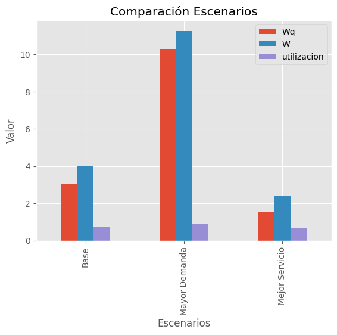
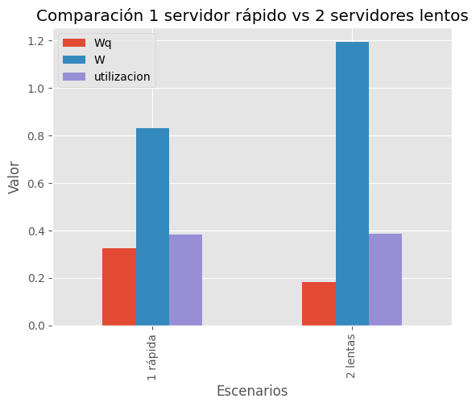

Complementaria Semana 6: Modelado Avanzado en SimPy#
Sistemas Multi-Servidor y Abandonos#
En la semana anterior construimos nuestro primer modelo M/M/1 (un servidor, llegadas Poisson, tiempos exponenciales). Sin embargo, los sistemas reales rara vez son tan simples. A menudo tenemos:
Múltiples servidores (cajas de banco, peajes).
Clientes impacientes (call centers donde la gente cuelga).
Hoy trabajaremos con un nuevo ejemplo base M/M/1 y luego lo extenderemos.
Objetivos#
Implementar un nuevo ejemplo de cola M/M/1
Implementar una cola M/M/k (múltiples servidores)
Modelar abandonos (Reneging) usando eventos condicionales (
yield a | b)Comparar resultados simulados vs teóricos
Analizar impacto de cambios en capacidad y demanda
import simpy, random, statistics, math
import numpy as np
import pandas as pd
import matplotlib.pyplot as plt
plt.style.use('ggplot')
1. Caso Base: M/M/1#
Centro de Impresión Universitario#
En una universidad existe un único punto de impresión para estudiantes.
Los estudiantes llegan aleatoriamente.
Solo hay una impresora.
Si está ocupada, deben esperar en cola FIFO.
Nadie abandona la fila.
Supuestos#
Llegadas ~ Poisson con tasa
lamServicio ~ Exponencial con tasa
mu1 servidor
Sin abandonos
Parámetros Base#
lam = 0.75estudiantes por minutomu = 1.00estudiantes por minutoT = 10_000minutos
Actividades#
Estimar por simulación:
Utilización
Wq,WLq,L(Ley de Little con tasa efectiva)
Calcular valores teóricos (si
lam < mu)Experimentos:
A: aumentar demanda a
lam = 0.90B: mejorar servicio a
mu = 1.20
Graficar comparación y calcular variaciones porcentuales
def simular_mmk(lam, mu, s, T, seed=0):
"""
Simula una cola M/M/s.
Parámetros:
lam: Tasa de llegadas (clientes/min)
mu: Tasa de servicio (clientes/min)
s: Número de servidores
T: Tiempo total de simulación
"""
# 1. Fijar la semilla para reproducibilidad (que siempre dé lo mismo al correrlo)
random.seed(seed)
# 2. Diccionario para guardar estadísticas (Monitor)
mon = {
"arrivals": 0, # Total clientes que llegaron
"departures": 0, # Total clientes atendidos
"busy_time": 0.0, # Tiempo total que los servidores estuvieron ocupados
"waits": [], # Lista con tiempos de espera en cola (Wq) de cada cliente
"system_times": [] # Lista con tiempos totales en el sistema (W)
}
# --- PROCESO 1: Generador de llegadas ---
def generador(env, lam, res):
while True:
# Generar tiempo entre llegadas (distribución exponencial)
# random.expovariate(lam) devuelve un tiempo t ~ Exp(lam)
yield env.timeout(random.expovariate(lam))
# Al terminar la espera, nace un nuevo cliente
mon["arrivals"] += 1
# Iniciamos el proceso del cliente individual
env.process(cliente(env, res))
# --- PROCESO 2: Comportamiento del Cliente ---
def cliente(env, res):
t_llegada = env.now # Guardamos la hora exacta de llegada
# Solicitamos el recurso (servidor)
# 'with' asegura que si algo falla, la solicitud se limpie correctamente
with res.request() as req:
# Esperamos a que el recurso se libere.
# 'yield req' detiene esta función hasta que haya cupo en el servidor.
yield req
# --- Aquí ya pasamos a ser atendidos ---
t_atencion = env.now
espera_cola = t_atencion - t_llegada # Calculamos cuánto esperamos
# Generamos duración del servicio
t_servicio = random.expovariate(mu)
mon["busy_time"] += t_servicio # Acumulamos tiempo de uso del servidor
# Ocupamos el servidor durante ese tiempo
yield env.timeout(t_servicio)
# --- El cliente sale del sistema ---
# Guardamos las métricas individuales de este cliente
mon["waits"].append(espera_cola)
mon["system_times"].append(espera_cola + t_servicio)
mon["departures"] += 1
# 3. Configuración del Entorno de Simulación
env = simpy.Environment()
# Creamos los servidores. capacity=s permite 's' atenciones simultáneas.
res = simpy.Resource(env, capacity=s)
# Iniciamos el generador de llegadas
env.process(generador(env, lam, res))
# 4. Correr la simulación
env.run(until=T)
# 5. Calcular Estadísticas Finales (Post-procesamiento)
# Utilización = (Tiempo total ocupado) / (Tiempo total disponible de todos los servidores)
util = mon["busy_time"] / (T * s)
Wq = statistics.mean(mon["waits"]) # Promedio espera en cola
W = statistics.mean(mon["system_times"]) # Promedio tiempo en sistema
# Tasa efectiva de salida (clientes atendidos por minuto)
lam_eff = mon["departures"] / T
# Ley de Little: L = lambda_eff * W
L = lam_eff * W
Lq = lam_eff * Wq
return {
"lam": lam, "mu": mu, "s": s,
"utilizacion": util,
"Wq": Wq, "W": W,
"Lq": Lq, "L": L
}
# Escenario base
lam = 0.75
mu = 1.00
T = 10_000
base = simular_mmk(lam, mu, 1, T, seed=1)
print("Resultados Simulación Base M/M/1")
pd.DataFrame([base]).round(4)
Resultados Simulación Base M/M/1
| lam | mu | s | utilizacion | Wq | W | Lq | L | |
|---|---|---|---|---|---|---|---|---|
| 0 | 0.75 | 1.0 | 1 | 0.7676 | 3.016 | 4.0252 | 2.2937 | 3.0612 |
Valores Teóricos M/M/1#
Si ρ = \(\lambda\) / \(\mu\) < 1:
Utilización: ρ
Wq = ρ / (\(\mu\) − \(\lambda\))
W = 1 / (\(\mu\) − \(\lambda\))
Lq = \(\lambda\) Wq
L = \(\lambda\) W
def teorico_mm1(lam, mu):
rho = lam/mu
Wq = rho/(mu-lam)
W = 1/(mu-lam)
Lq = lam*Wq
L = lam*W
return {
"utilizacion": rho,
"Wq": Wq,
"W": W,
"Lq": Lq,
"L": L
}
teo = teorico_mm1(lam, mu)
print("Valores Teóricos")
pd.DataFrame([teo]).round(4)
Valores Teóricos
| utilizacion | Wq | W | Lq | L | |
|---|---|---|---|---|---|
| 0 | 0.75 | 3.0 | 4.0 | 2.25 | 3.0 |
2. Experimentos de Sensibilidad#
Ahora analizaremos cómo cambia el sistema cuando:
Aumenta la demanda
Mejora la velocidad de servicio
Compararemos contra el escenario base y calcularemos variaciones porcentuales.
# Escenario A: Mayor demanda
esc_A = simular_mmk(0.90, mu, 1, T, seed=1)
# Escenario B: Mejor servicio
esc_B = simular_mmk(lam, 1.20, 1, T, seed=1)
df = pd.DataFrame([base, esc_A, esc_B])
df.index = ["Base","Mayor Demanda","Mejor Servicio"]
df
| lam | mu | s | utilizacion | Wq | W | Lq | L | |
|---|---|---|---|---|---|---|---|---|
| Base | 0.75 | 1.0 | 1 | 0.767634 | 3.015993 | 4.025241 | 2.293663 | 3.061195 |
| Mayor Demanda | 0.90 | 1.0 | 1 | 0.904416 | 10.264184 | 11.267864 | 9.248029 | 10.152346 |
| Mejor Servicio | 0.75 | 1.2 | 1 | 0.646345 | 1.556166 | 2.401282 | 1.190156 | 1.836500 |
# Variación porcentual respecto al base
variacion = (df - df.loc["Base"]) / df.loc["Base"] * 100
variacion
| lam | mu | s | utilizacion | Wq | W | Lq | L | |
|---|---|---|---|---|---|---|---|---|
| Base | 0.0 | 0.0 | 0.0 | 0.000000 | 0.000000 | 0.000000 | 0.000000 | 0.000000 |
| Mayor Demanda | 20.0 | 0.0 | 0.0 | 17.818749 | 240.325172 | 179.930209 | 303.199184 | 231.646441 |
| Mejor Servicio | 0.0 | 20.0 | 0.0 | -15.800391 | -48.402860 | -40.344388 | -48.111120 | -40.007085 |
df[["Wq","W","utilizacion"]].plot(kind="bar")
plt.title("Comparación Escenarios")
plt.xlabel("Escenarios")
plt.ylabel("Valor")
plt.show()

Análisis de Sensibilidad#
Observe los resultados obtenidos y responda:
¿Cómo cambia la utilización cuando \(\lambda\) aumenta?
¿El crecimiento de \(W_q\) es proporcional al aumento de \(\lambda\)?
Compare el impacto de:
Aumentar demanda (\(\lambda\))
Mejorar servicio (\(\mu\))
Reflexione:
Cuando \(\rho\) se acerca a 1, los tiempos de espera crecen de forma no lineal.
Pequeños cambios en demanda pueden generar aumentos desproporcionados en congestión.
Mejorar la capacidad del servidor puede tener efectos más fuertes de lo que intuitivamente se espera.
¿Por qué ocurre esto matemáticamente?
3. Sistemas Multi-Servidor (M/M/k)#
Ahora duplicamos la impresora.
En SimPy esto se implementa cambiando la capacidad del recurso.
Compararemos el desempeño con el sistema M/M/1 original.
mm2 = simular_mmk(lam, mu, 2, T, seed=1)
print("Resultados M/M/2")
print({k: round(v,4) for k,v in mm2.items() if k!="waits_sample"})
Resultados M/M/2
{'lam': 0.75, 'mu': 1.0, 's': 2, 'utilizacion': 0.385, 'Wq': 0.1835, 'W': 1.1941, 'Lq': 0.1398, 'L': 0.9097}
Comparación:#
1 impresora rápida vs 2 impresoras lentas#
Si la capacidad total de servicio es la misma:
1 servidor con μ = 2
2 servidores con μ = 1 cada uno
¿Esperaría usted que el desempeño fuera igual?
Piense en:
Variabilidad
Formación de cola única
Probabilidad de que todos los servidores estén ocupados simultáneamente
Luego compare con los resultados simulados.
s1 = simular_mmk(lam=lam, mu=2, s=1, T=T, seed=1)
s2 = simular_mmk(lam=lam, mu=1, s=2, T=T, seed=1)
comp = pd.DataFrame([s1, s2])
comp.index = ["1 rápida","2 lentas"]
comp
| lam | mu | s | utilizacion | Wq | W | Lq | L | |
|---|---|---|---|---|---|---|---|---|
| 1 rápida | 0.75 | 2 | 1 | 0.383915 | 0.325383 | 0.830135 | 0.247486 | 0.631401 |
| 2 lentas | 0.75 | 1 | 2 | 0.385032 | 0.183476 | 1.194118 | 0.139772 | 0.909679 |
# Grafico comparativo
comp[["Wq","W","utilizacion"]].plot(kind="bar")
plt.title("Comparación 1 servidor rápido vs 2 servidores lentos")
plt.xlabel("Escenarios")
plt.ylabel("Valor")
plt.show()

Reflexión:#
Ambos sistemas tienen la misma capacidad total de servicio (2 clientes por minuto), pero los resultados no son iguales.
Con 2 servidores lentos, el tiempo de espera en cola es menor.
Con 1 servidor rápido, el tiempo total en el sistema puede ser menor.
Esto muestra que tener la misma capacidad total no garantiza el mismo desempeño. La forma en que organizamos los servidores también influye en la congestión.
4. Clientes Impacientes (Reneging)#
Ahora los estudiantes abandonan si esperan más de un tiempo máximo paciencia.
El cliente espera lo que ocurra primero:
Obtener servidor
Agotar paciencia
Sintaxis clave en SimPy:
resultado = yield req | env.timeout(paciencia)
def simular_mmk_reneging(lam, mu, s, T, paciencia, seed=0):
"""
Simula una cola M/M/s con ABANDONO (Reneging).
paciencia: Tiempo promedio que un cliente espera antes de irse.
"""
random.seed(seed)
mon = {
"busy_time": 0,
"arrivals": 0,
"completed": 0, # departures atendidos
"reneged": 0, # abandonos
"waits": [],
"system_times": []
}
def cliente_impaciente(env, res):
t_llegada = env.now
with res.request() as req:
# Definimos la paciencia de este cliente específico (ej: Exponencial)
t_paciencia = random.expovariate(1.0/paciencia)
# --- EL CORAZÓN DEL RENEGING ---
# Esperamos por DOS eventos posibles:
# 1. req: Conseguimos el servidor
# 2. timeout(t_paciencia): Se nos acaba la paciencia
# El operador '|' significa "lo que ocurra primero".
resultados = yield req | env.timeout(t_paciencia)
# Verificamos quién ganó
if req in resultados:
# GANÓ EL SERVIDOR: Nos atienden
espera = env.now - t_llegada
t_serv = random.expovariate(mu)
mon["busy_time"] += t_serv
yield env.timeout(t_serv)
mon["waits"].append(espera)
mon["system_times"].append(env.now - t_llegada)
mon["completed"] += 1
else:
# GANÓ LA PACIENCIA: El cliente se va (Abandona)
# No sumamos tiempos de servicio ni espera en 'waits' de atendidos
mon["reneged"] += 1
# SimPy cancela automáticamente el request al salir del 'with'
def generador(env):
while True:
yield env.timeout(random.expovariate(lam))
mon["arrivals"] += 1
env.process(cliente_impaciente(env, res))
env = simpy.Environment()
res = simpy.Resource(env, capacity=s)
env.process(generador(env))
env.run(until=T)
# Calculamos porcentaje de abandono
tasa_abandono = mon["reneged"] / mon["arrivals"] if mon["arrivals"] > 0 else 0
# Nota: Wq solo se calcula sobre los que NO abandonaron
util = mon["busy_time"]/(T*s)
Wq = statistics.mean(mon["waits"]) if mon["waits"] else 0
W = statistics.mean(mon["system_times"]) if mon["system_times"] else 0
lam_eff = mon["completed"]/T
L = lam_eff * W
Lq = lam_eff * Wq
return {
"lam": lam, "mu": mu, "s": s, "paciencia_prom": paciencia,
"utilizacion": util,
"Wq": Wq, "W": W,
"Lq": Lq, "L": L,
"Clientes Totales": mon["arrivals"],
"Clientes Atendidos": mon["completed"],
"Clientes Perdidos": mon["reneged"],
"Tasa Abandono": tasa_abandono
}
# Ejecutar simulación con reneging
res_reneging = simular_mmk_reneging(lam, mu, s=1, T=T, paciencia=5, seed=1)
print("Resultados Simulación con Reneging")
pd.DataFrame([res_reneging]).round(4)
Resultados Simulación con Reneging
| lam | mu | s | paciencia_prom | utilizacion | Wq | W | Lq | L | Clientes Totales | Clientes Atendidos | Clientes Perdidos | Tasa Abandono | |
|---|---|---|---|---|---|---|---|---|---|---|---|---|---|
| 0 | 0.75 | 1.0 | 1 | 5 | 0.6228 | 0.7822 | 1.7806 | 0.4879 | 1.1107 | 7525 | 6238 | 1285 | 0.1708 |
# Caso Base (sin reneging)
res_base = simular_mmk(lam, mu, s=1, T=T, seed=1)
print("Resultados Simulación Base (sin Reneging)")
pd.DataFrame([res_base]).round(4)
Resultados Simulación Base (sin Reneging)
| lam | mu | s | utilizacion | Wq | W | Lq | L | |
|---|---|---|---|---|---|---|---|---|
| 0 | 0.75 | 1.0 | 1 | 0.7676 | 3.016 | 4.0252 | 2.2937 | 3.0612 |
Discusión Conceptual: Sistema con Abandonos#
Advertencia Importante#
Un sistema con abandonos puede mostrar:
Menor (W_q)
Menor (L_q)
Pero esto no significa necesariamente que el sistema sea mejor.
¿Por qué?
Porque los clientes más impacientes salen del sistema y dejan de contarse en las estadísticas de espera.
Esto introduce un sesgo de selección: solo observamos a quienes toleraron la espera.
Reflexione:#
¿Disminuye realmente la congestión o simplemente se expulsan clientes?
¿Cómo debería medirse el desempeño si hay pérdida de clientes?
¿Qué métrica es más relevante en un sistema real: tiempo promedio o tasa de abandono?